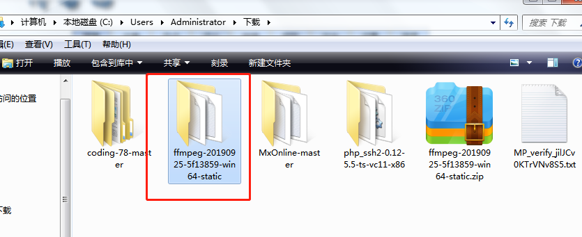
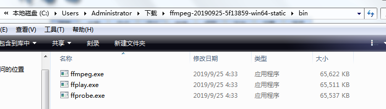
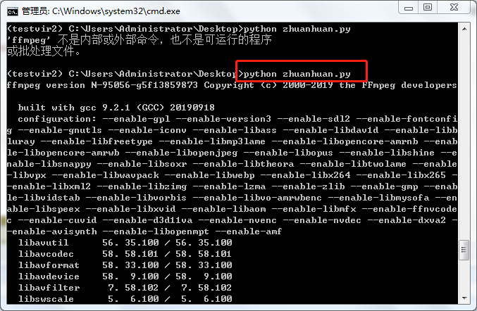
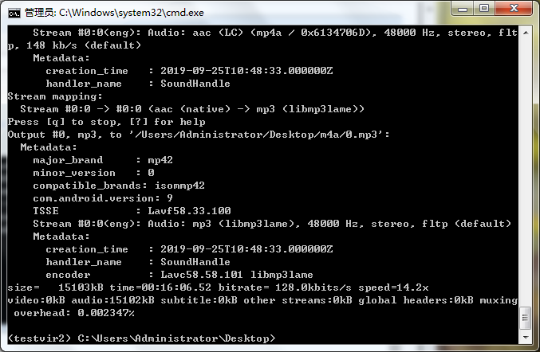
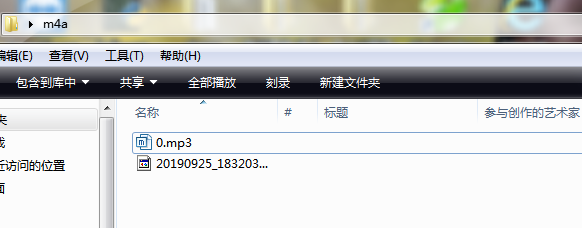

群里看到有人询问：谁会用python将微信音频文件后缀m4a格式转成mp3格式，毫不犹豫回了句：我会。然后就私下聊起来了
解决方法介绍如下：
工具：windows系统，python2.7,转换库ffmpeg
安装ffmpeg库：下载对应电脑系统版本 https://ffmpeg.zeranoe.com/builds/ 我这里用的是window 64位


这里由于路径问题，我没有把ffmpeg加入到系统环境变量中，所以我用的是绝对路径
C:/Users/Administrator/Downloads/ffmpeg-20190925-5f13859-win64-static/bin/ffmpeg详细脚本代码如下：
# _*_ encoding:utf-8 _*_
import os
m4a_path = "/Users/Administrator/Desktop/m4a/" #m4a文件所在文件夹
m4a_file = os.listdir(m4a_path)
for i, m4a in enumerate(m4a_file):
os.system("C:/Users/Administrator/Downloads/ffmpeg-20190925-5f13859-win64-static/bin/ffmpeg -i "+ m4a_path + m4a
+ " " + m4a_path + str(i) + ".mp3" )
在cmd下运营该脚本文件，我这里是用virtualenv创建的python的独立虚拟环境里执行的脚本命令，大家可以不在虚拟环境里执行，只要能运行该脚本就可以：
python zhuanhuan.py
转换成功后如下图

转换文件所在目录，转换后的效果文件 0.mp3如下图：

有问题欢迎问我 微信zmd1047773569